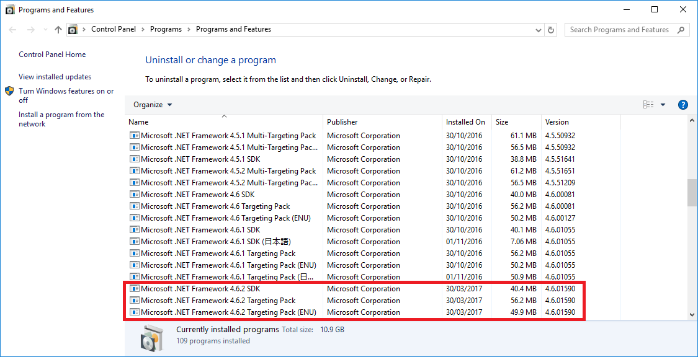
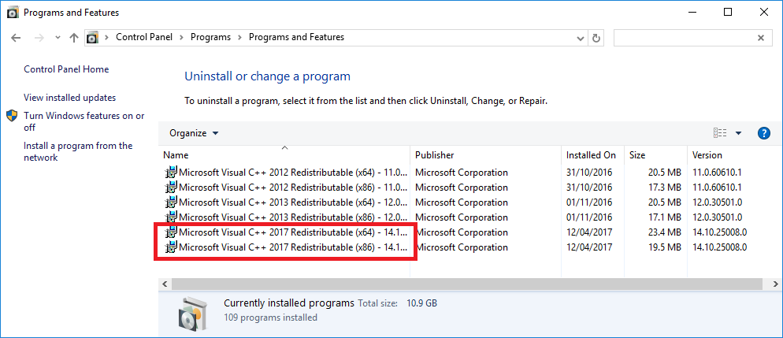

Stride が実行されない
Stride の実行で問題がある場合は、すべての前提条件がインストールされていることを確認します。
- .NET Framework 4.7.2
- Visual C++ 再頒布可能パッケージ 2015 または 2017
- Visual Studio Build Tools
または、Stride をアンインストールし、Stride インストーラーを再実行して、メッセージが表示されたら前提条件をインストールします。
.NET Framework 4.7.2
.NET Framework 4.7.2 がインストールされているかどうか確認するには、［コントロール パネル］>［プログラム］>［プログラムと機能］で、.NET 4.7.2 を含むエントリを探します。

インストールされていない場合は、Microsoft ダウンロード センターからダウンロードできます。
Note
Visual Studio をインストールする場合は、.Net Framework のサポートも忘れずにインストールします。Visual Studio の基本インストールだけでは十分ではありません。
Visual C++ 再頒布可能パッケージ 2015 または 2017
Visual C++ 再頒布可能パッケージがインストールされているかどうか確認するには、［コントロール パネル］>［プログラム］>［プログラムと機能］で、2015 Redistributable または 2017 Redistributable を探します。

インストールされていない場合は、［Visual Studio のダウンロード](https://www.visualstudio.com/downloads/) ([その他ツール及びフレームワーク］の下) から 2017 再頒布可能パッケージをダウンロードできます。
Visual Studio Build Tools
Visual Studio がインストールされていない場合は、Visual Studio Build Tools をインストールする必要があります。［Visual Studio のダウンロード](https://www.visualstudio.com/downloads/) ([その他ツール及びフレームワーク］の下) からダウンロードできます。
Note
Windows は、Visual Studio インストーラーを使用して、前提条件の Visual C++ 再頒布可能パッケージと Visual Studio Build Tools をインストールします。Visual Studio が必要ない場合はインストールされません。